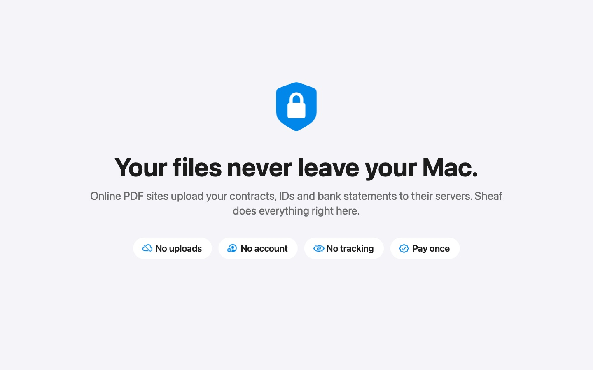

How to convert a bank statement PDF to Excel on a Mac
Copying a statement into a spreadsheet by hand is slow, and online converters upload your financial records. Here's how to do it on your Mac, with a check that every row is right.
Updated 9 November 2026
Steps
- Start dragging the statement PDFs from Finder or Mail.
- Pause, then choose Excel in the circle of actions.
- Review the rows. Any row that doesn't add up to the running balance is highlighted; click it to see that line in the PDF.
- Choose Save as Excel (or CSV). Several statements become one workbook, with an All statements sheet.
Why the balance check matters
Every converter can misread a line, especially on scans. Sheaf checks that each debit or credit takes the previous balance to the next one. If a row doesn't add up, you see it before it reaches your books, side by side with that line of the PDF.
Statement layouts Sheaf reads
| Layout | Example banks | Notes |
|---|---|---|
| Separate withdrawal and deposit columns | HDFC, ICICI, SBI, Axis | Value date and cheque/reference columns kept |
| One signed amount column, dates without a year | Chase and other US banks | Year taken from the statement period, including December–January |
| Money out / Money in | Barclays, Lloyds, NatWest | £ amounts |
| Debit / Credit with CR balances | CommBank, Westpac, ANZ | “CR” and “DR” balances understood |
| Dr/Cr marker column, newest first | Many Indian and Middle Eastern banks | Opening balance read from B/F lines |
| Scanned statements | Any | Read on the Mac, then checked against the balance |
Bank names are examples of common layouts; Sheaf isn't affiliated with any bank.
Locked statements
Many banks send statements locked with a password made from your name, date of birth or customer ID. Save those details once and Sheaf opens them for you. See how to unlock a password-protected PDF.

Free 7-day trial · then one purchase, no subscription
Questions
Can I convert a bank statement PDF to Excel without uploading it?
Yes. Sheaf converts it on your Mac. Nothing is uploaded.
Does it work with scanned bank statements?
Yes. Sheaf reads the scanned page on the Mac and checks each row against the balance, so misread rows are highlighted.
Can I convert several statements into one spreadsheet?
Yes. Drag them together; Sheaf makes one sheet per statement and an All statements sheet.
Can I get CSV instead of Excel?
Yes. Choose Save as CSV. Dates are saved as YYYY-MM-DD.